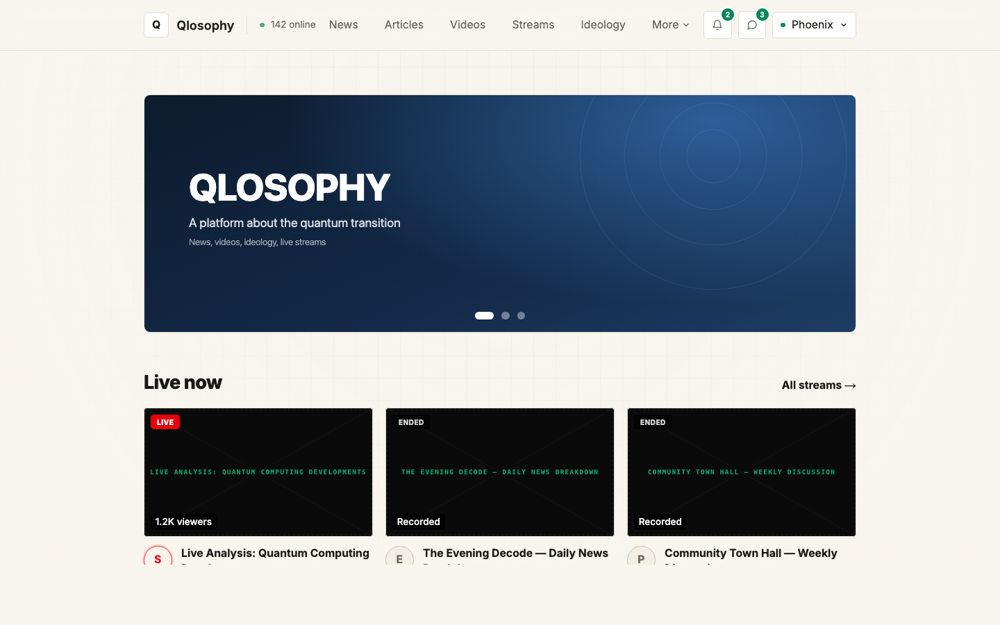

Monopolizing global attention on the threshold of quantum singularity.
Vitalik Buterin has publicly outlined an emergency hard‑fork plan to migrate Ethereum to post‑quantum signatures — a contingency to keep Web3 solvent if Q‑Day arrives before the network is ready.
Each horizontal string is a life‑line of a player in the quantum race. The glowing points are real milestones they publish. The base string — ATQM / Qlosophy — does not invent data: it pulls every external signal inward and re‑publishes the read that drives toward Q‑Day.
Every external announcement is a packet of borrowed legitimacy. We cite it, never fabricate it.
As the timeline tightens toward 2029, signals fire faster and spiral into a single narrative.
External strings shoot light into the base string — each rival's news lights up our node.
Oracle reads every source 24/7 — Tier‑1 media, scientific pre‑prints, state doctrines — independent of markets, outages or time zones.
Each parsed signal is structured, scored and pushed straight onto the Qlosophy site — no human in the loop.
The world's first platform dedicated entirely to Q‑Day — news, live streams & community.
Breaking news, deep analysis and real-time signal tracking from every lab in the quantum race.
24/7 moderated streams and broadcasts covering every milestone as the countdown progresses.
Forums, study groups and post-quantum prep channels — the largest Q-Day community online.
